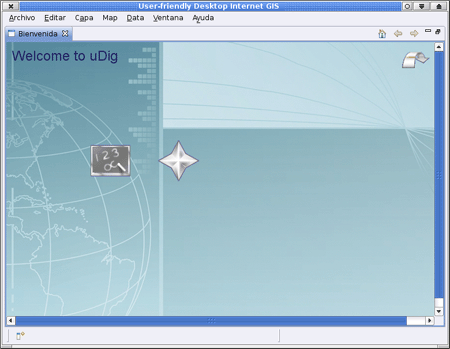
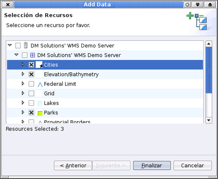
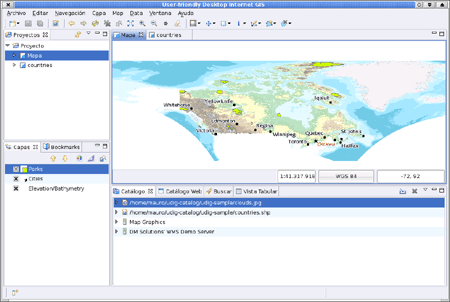
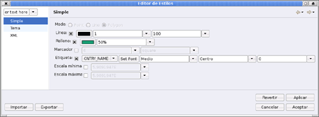

Breve Introducción
Esta es una rápida introducción a la aplicación uDig que se incluye además como parte de la ayuda en linea.
Datos de Ejemplo
Antes de comenzar, por favor, tómese un momento para descargar algunos datos de ejemplo que hemos puesto a su disposición en la web:
- Pulse el botón derecho sobre el siguiente enlace y elija Guardar enlace como...:
data_v1_1.zip
- Cuando se le pregunte por la ubicación del archivo, seleccione una ubicación adecuada como su escritorio.
- Descomprimir (unzip) el contenido de éste fichero en un una carpeta de datos en su escritorio.
Si usted lo prefiere puede experimentar con sus propios datos SIG. Utilizando los datos de ejemplo anteriores podrá seguir con éste manual paso a paso.
La aplicación uDig
- Elija uDig 1.1 > uDig En el menú Inicio.
- La aplicación se tomará unos minutos para iniciarse.

La aplicación uDig mantiene una carpeta de configuración en su directorio de trabajo. La carpeta de configuración será creada la primera vez que la aplicación se ejecute. Si tiene dificultades, o esta ejecutando uDig en Linux o Mac por favor revise la página de referencia Ejecutando uDig
Vista Bienvenido
- Cuando inicie uDig por primera vez, la vista Bienvenido se presentará a pantalla completa. Esta pantalla tiene enlaces a tutoriales, documentación y al sitio Web del proyecto.
- Haga click en la flecha etiquetada como Workbench, en la esquina superior derecha, que presentará el contenido del banco de trabajo de uDig.

Puede volver a la vista de Bienvenida en cualquier momento seleccionando Ayuda > Bienvenido en la barra de menú.
Workbench
La ventana Workbench ofrece múltiples Editores (cada uno con un mapa) y vistas de apoyo (que ofrecen información sobre el mapa actual).

Arriba se muestra una típica sesión de uDig con el Editor de Mapa , la vista de Proyectos , la vista de Capas y la vista del Catálogo . Estas vistas serán descritas en detalle más adelante cuando mostremos su utilización.
Archivos
Para comenzar vamos a cargar algunos de los datos de ejemplo, que usted ha descargado previamente.
- Elija Capa> Añadir en la barra de menú para abrir la ventana del asistente para Agregar Datos.
- Seleccione Archivos desde la lista de fuentes de datos.
- Presione Siguiente para abrir el diálogo de archivo.
- Seleccione el siguiente archivo de su carpeta de datos: countries.shp
- Pulse la tecla Abrir
- Un nuevo Editor de Mapa se abrirá basado en el contenido de su shapefile. El nombre por omisión y la proyección del Mapa serán tomados del shapefile.
- Podrá ver que la vista Catálogo se ha actualizado presentando una entrada para countries.shp. Esta vista se utiliza para rastrear el uso de los recursos utilizados por uDig.
- La vista Capas presentará la una única capa desplegada en este mapa. Esta vista se utiliza para cambiar el orden y apariencia de la información en su mapa.
- La vista Proyecto se actualizará para mostrar que su mapa se almacena en proyectos > countries. Es posible tener varios proyectos abiertos a la vez, cada uno de los cuales puede tener varios mapas.
- Abra su carpeta de datos en Windows
- Arrastre el archivo clouds.jpg en el editor de Mapa, una nueva capa se agregará al mapa.
- Puede ver el orden de las capas que son dibujadas en la vista de capas. Ahora la capa clouds.jpg se dibuja en el tope de la capa countires.
- Seleccione la capa clouds.jpg, en la vista Catálogo, y arrástrela a la parte inferior de la lista

Información: una de las preguntas más frecuentes, cuando uDig es siendo considerado como herramienta para una organización, es cuánta memoria utiliza la aplicación. A diferencia de muchas aplicaciones GIS, uDig puede ejecutarse con una cantidad fija de memoria. El shapefile anterior no es cargado en memoria, tenemos una política de mantenimiento de datos en disco y dibujar los datos de éste shapefile en la pantalla cuando sea necesario.
Sugerencia ¡También puede arrastrar y soltar shapefiles directamente en la aplicación uDig !
Mapa
Es posible controlar el sitio del mundo que está presentando el Editor de Mapa, utilizando las herramientas de navegación disponibles en la barra de herramientas ubicada en la parte superior de la pantalla.
 La herramienta de Zoom está disponible por defecto.
La herramienta de Zoom está disponible por defecto.
- Use la herramienta de zoom para dibujar una zona rectangular con el botón izquierdo del ratón, encerrando el área del mundo que desea ver.
- Para alejar el dibujo trace una zona rectangular con el botón derecho.
- El
 Pan se puede utilizar para desplazarse por el mapa sin cambiar la escala.
Pan se puede utilizar para desplazarse por el mapa sin cambiar la escala.
- Existen varios botones de navegación que pueden utilizarse a la vez:
 Mostrar Todo, puede utilizarse para volver a ver el área entera en cualquier momento.
Mostrar Todo, puede utilizarse para volver a ver el área entera en cualquier momento. Acercar y
Acercar y  alejar (Zoom In y Zoom Out) pueden utilizarse para cambiar la escala por una cantidad fijada.
alejar (Zoom In y Zoom Out) pueden utilizarse para cambiar la escala por una cantidad fijada.
- Puede usar Navegación > Atrás y Navegación > Adelante en la barra de menú para ciclar a través de los lugares visitadas previamente.
Consejo: muchas herramientas permiten realizar un Pan manteniendo el botón central pulsado y controlar la escala usando la rueda de desplazamiento.
Servidor de Mapas Web
Una de las razones para utilizar una aplicación como uDig es la posibilidad que brinda de acceder a toda la información geoespacial de libre disponibilidad en la web. Esta sección cubre el uso de Web Map Servers que proveen capas de información que usted puede incluir en sus mapas.
- Seleccione Archivo > Nuevo > Nuevo mapa de la barra de menú
- Cambie a la vista Web realizando un click en la pestaña para que el Catalog presente la vista Web.
- Realice un click en el enlace WMS:dm solutions

- En la página de Seleccion de Recurso vamos a seleccionar las siguientes capas:
- Elevation / Bathymetry *
- Parks
- Cities

- Pulse Finalizar para añadir estas capas a su mapa

- Utilice la herramienta de Zoom para acercarse a uno de los parques
- Cambie a la
 y haga click en uno de los parques para obtener más información
y haga click en uno de los parques para obtener más información
Sugerencia: Puede cambiar entre las herramientas de zoom e información pulsando Z e I en el teclado.
Estilo
- Seleccionar projecto > countries, puede hacer un doble click para abrir este Mapa, o un click con el botón derecho y elegir Open Map.
- Seleccione la capa countries en la vista de Capas.
- Abrir el Editor de Estilos haciendo un click derecho en la capa countries y selecionando Cambiar Estilo.
- Realizaremos algunos cambios en la presentación de países
- Línea: Haga click en el Color y cambie el color a NEGRO
- Rellenar: eliminamos la cruz de la casilla de verificación para desactivar el relleno
- Label: chequee la casilla, y elija CNTRY_NAME en la lista de atributos

- Presione Aplicar para ver cómo se presenta su Mapa, la vista de Capas se actualizará para reflejar el estilo actual.
- Cuando esté conforme con el resultado puede presionar Aceptar para salir.
- Algunos archivos incluyen estilos, Seleccione Capa > Add ... en la barra de menú
- Seleccione Archivo de la lista de fuentes de datos y pulse Siguiente
- Utilizando el diálogo elija el archivo timezone.shp y presione Abrir
- Puede resultar difícil ver qué sucede con la capa clouds.jpg para más detalles. Seleccione Mapa > Mylar, en la barra de menú, para enfocar la capa seleccionada.
- Usando la vista Capas seleccione timezone, countries y clouds.jpg por turnos para ver el efecto

- Puede desactivar este efecto en cualquier momento usando Mapa > Mylar desde la barra de menú.
¿Qué es lo siguiente?
Este es sólo el primer paso en el camino del aprendizaje de uDig. Hay mucho material (y más capacidad) que usted podrá descubrir en nuestras guías paso a paso (walkthroughs).
- Walkthrough 1 - Podrá probar la utilización de PostGIS, para extraer datos de un Web Feature Server y explorar el uso de Temas con nuestra poderosa tecnología de color Brewer.
- Walkthrough 2 - En éste se presentan las distintas posibilidades para crear y utilizar herramientas de edición y manipulación de las distintas características de los datos en shapefiles, además de la instalación de GeoServer y la edición mediante un Web Feature Server.
(c) Copyright (c) 2004-2008 Refractions Research Inc. and others.